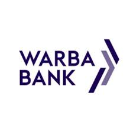
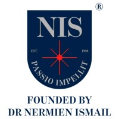

Oracle Fusion SCM modules
- Inventory Management
- Purchasing
- Self-Service Procurement
- Product Hub
- Sourcing
- Supplier Qualification
- Supplier Portal
- Procurement Contracts
- Maintenance
- Cost Management
Available for new Oracle Fusion SCM engagements
Oracle SCM Functional Consultant
I implement Oracle Fusion Cloud supply chain systems — mapping the business process, configuring the modules, migrating the data and training the people who will use it. Five years of delivery across manufacturing, banking, education and transportation in Saudi Arabia, Kuwait and Egypt.
5+
Years on Oracle Fusion Cloud
2
Full-cycle implementations
5
Client engagements
10
Fusion modules configured
About
I am an Oracle SCM Functional Consultant based in Cairo, working with clients across Saudi Arabia, Kuwait and Egypt. My core modules are Inventory Management, Procurement and Product Hub, and I have taken two programmes end to end — from the first requirements workshop through configuration, data migration and user acceptance testing to post-go-live support.
I moved into consulting from software development, and that background still shapes how I work. I sit between the business and the technical team: I translate a process into a configuration, write the documentation that keeps a project auditable, and test properly before anyone signs off.
The part of the job I care most about is the handover. A system nobody understands has not really gone live, so training and hypercare get the same attention as the setup itself.
Oracle Unified Method (OUM), with full RD.011, MD.050, TE.040 and DO.070 documentation.
Engagements
Five Oracle Fusion SCM engagements. Select a client to read the scope of work.

Warba Bank Full-cycle implementationDecember 2022 — January 2023
November 2022 — December 2022

Advanced Education Schools — NIS Implementation & supportJuly 2021 — October 2022
Approach
The Oracle Unified Method phases I work through on every programme, and the deliverable each one produces.
Step 1
Workshops with the business to capture how the process works today and how it should work on Fusion.
Deliverable: RD.011
Step 2
Requirements mapped to module features; functional designs for reports, alerts and integrations.
Deliverable: MD.050
Step 3
Item master, organisation structure and supplier data defined, cleansed and governed.
Deliverable: MDM
Step 4
Full setup of the modules, then a conference room pilot to walk the business through it.
Deliverable: CRP sign-off
Step 5
Master and transactional data loaded with FBDI and ADFDI templates, then reconciled.
Deliverable: Load & reconciliation
Step 6
End-to-end scenarios run by the business, defects logged and closed, final sign-off secured.
Deliverable: TE.040
Step 7
Role-based sessions and user guides so each team can run their own part of the process.
Deliverable: DO.070
Step 8
Cutover support, rapid fixes on live issues, and stabilising the system in its first weeks.
Deliverable: Stable operation
Experience
Oct 2022
—
Present
Raya International Services
Jul 2021
—
Oct 2022
Advanced Education Schools — NIS
Feb 2021
—
May 2021
Next Academy
Jun 2018
—
Jan 2021
Ekhtar — delivery startup
Expertise
Credentials
| Oracle Fusion Cost Management | May 2024 |
|---|---|
| Oracle SCM Cloud Functional Training — Next Academy | 2021 |
| SQL Fundamentals | May 2016 |
| Java Programming (J2SE · J2EE · Oracle ADF) — Next Academy | 2015 |
BSc Computer Science
Future Academy
Contact
A new implementation, a rollout to another entity, or support on a system already live — send me the context and I will tell you honestly whether I am the right fit.
Email me